A source-governed 30-minute motion-picture storyboard adapted from all 34 existing Week 10 folios. Expand any scene to inspect its camera coverage, pacing, geographical locks, reference assets and sound cues. Each illustrated frame is a blocking schematic, not a completed generated shot.
CANDIDATE · NO ART APPROVAL18 DIRECTORS REMAIN CANONICAL12 SPECIALISTS = METHOD LENSES ONLY
Open a scene to view its shot panels. Camera angles and blocking are source-anchored; original shot IDs are retained. Image slots point to canon/character reference art when those assets exist in the same local checkout. These are reference images, not generated storyboard frames. Proposed 16:9 film framing does not alter the original 9:16 memo masters.
His Majesty’s Blood reaches 208.76. The LLC reaches 203.96. The Commonwealth’s first two 200-point scores of this season arrive beneath a sky growing harder to ignore.
Ambience: Record pavilion, discreet civic sounds, weather rising
Score: Low original orchestral thesis
Foley: Paper, footfalls, standard ratchet
Time logic: EDITORIAL_JUXTAPOSITION_NOT_A_MEETING
Scene exit: The shared sky yields to the Opening Drive briefing; no cover event is asserted as a real meeting.
Reference images / not story frames
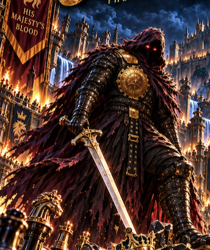
CHAR-AUSTIN-BYARS
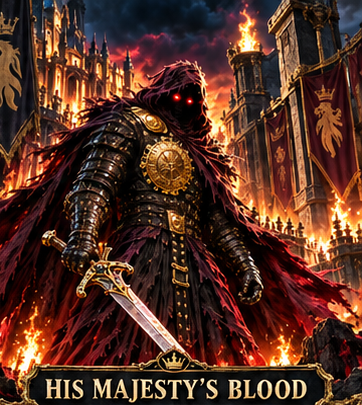
CHAR-AUSTIN-BYARS
CHAR-DAVID-BABB
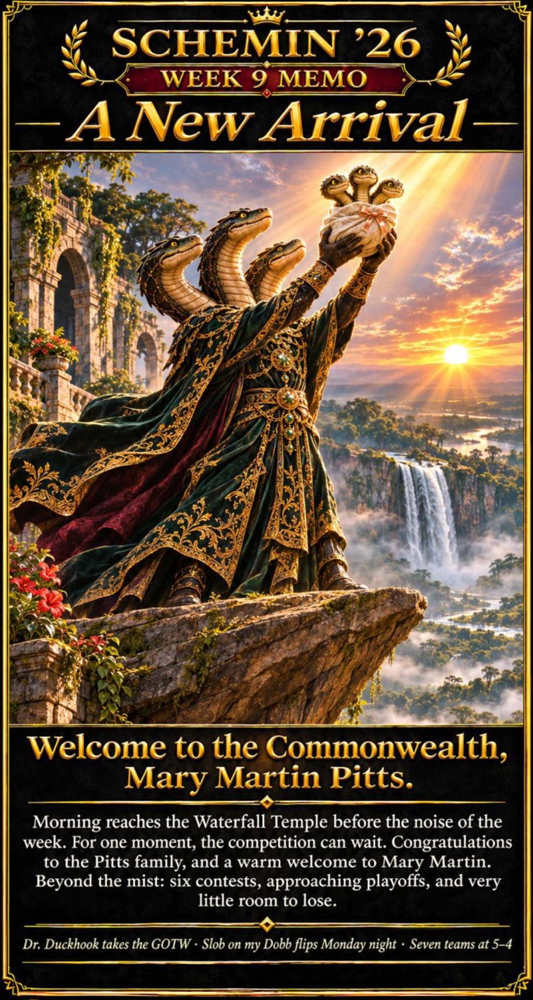
published_memo_precedent
26 source words · 11 seconds at 145 wpm. Dialogue/ADR not locked.
Sequential shot cards · editorial coverage
W10F-P01-S0100:00–00:06 · 6s
OPENING / LAYOUT SCHEMATIC
Camera: Low, dramatic two-subject editorial cover: canonical His Majesty's Blood standing with the controlled gift-bearing posture from the Jackson birthday sequence; canonical The LLC seated in his leather command chair with cigar and dark suit on the ridge’s field throne dais. Two coherent atmospheric story territories share one full-bleed composition without implying a physical meeting. The title and complete cover prose occupy deliberately quiet shadow; both characters dominate, not two empty banners.
Blocking: Orient the audience in the already described location: An editorial blend of Jackson hall warmth and the separate mountain-gate storm. Architecture remains subordinate to the two canonical figures. No literal roof break or invented common battlefield.
Dramatic purpose: Establish correct time, weather, light and landmark; no new event.
Movement: Stable orienting push or completely fixed geography master
Blocking: Existing foreground/material only: His Majesty's Blood: hooded concealed face, two luminous eyes, dark segmented armor, gold chest medallion, ragged cloak, championship belt retained; wrapped birthday gift as the sequence callback.
Dramatic purpose: Ground the fiction in tactility and allow Foley/editorial breath.
Movement: Tactile macro or same-axis insert; no new set or props
Do not alter: All-time record claim · Crown on His Majesty's Blood · Belt moved to another owner · Actual roof-collapse canon
End state: Cover editorial synthesis does not create a shared encounter, alliance, crown or belt transfer.
Stage: STAGED BOARD ONLY. Independently verify faces, geography, sound, rights and release before filming.
W10-P02 · SCENE 02
ROOM ABOVE TWO HUNDRED
Commonwealth intelligence / editorial · 5 shots
00:00:36 → 00:01:42
66 seconds
Source narration and scene premise
Two teams crossed two hundred by Sunday night. One brought a hamburger to a birthday party. The other left his chair and offered a man a bargain on his own mountain. In the Highlands, an outlaw got his laugh, copied a centaur’s stance for a second one, and gave the centaur a reason to chase him. In the east, El Niño’s rain found a way past Red Leopards’ sandbags. Inland, trees were already coming down. Seven Deadly Chins arrived with a jackhammer just as a household settled. Slob on my Dobb kept a delivery appointment in a swamp. Four regular-season games remain. Who has to live with what happened here?
Ambience: Record pavilion, discreet civic sounds, weather rising
Score: Low original orchestral thesis
Foley: Paper, footfalls, standard ratchet
Time logic: ONE_CONTINUOUS_MOMENT
Scene exit: Move from the week’s shared pressure to the commissioner’s human consequences.
Reference images / not story frames
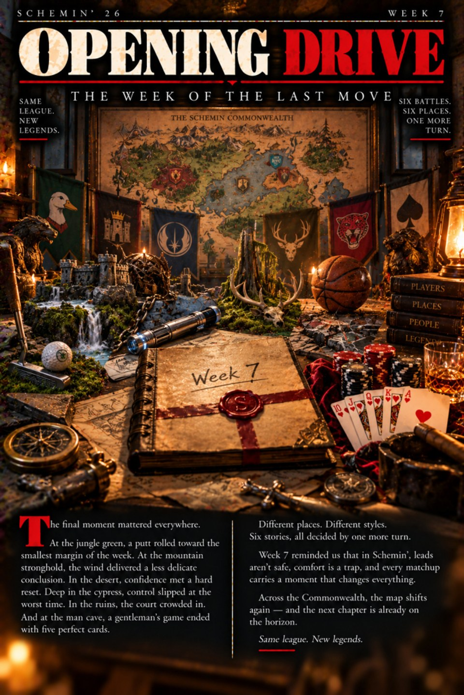
published_memo_precedent
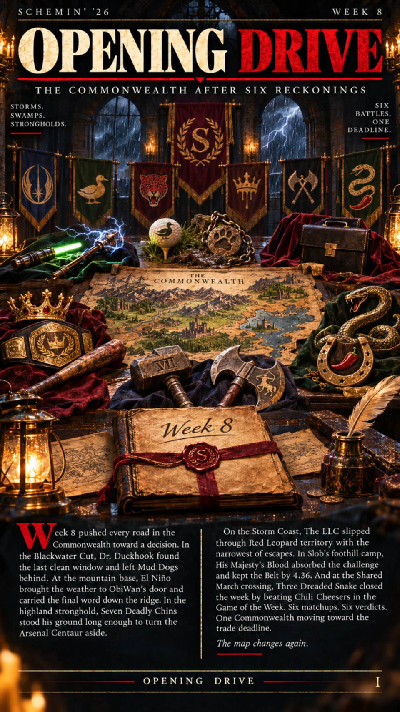
published_memo_precedent
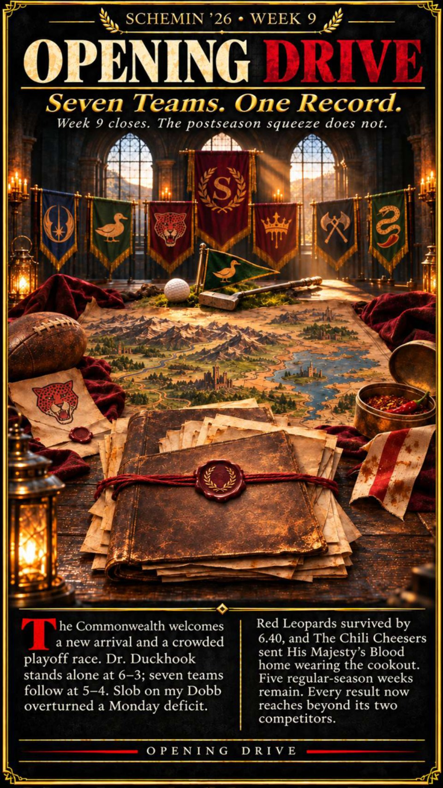
published_memo_precedent
110 source words · 46 seconds at 145 wpm. Dialogue/ADR not locked.
Sequential shot cards · editorial coverage
W10F-P02-S0100:36–00:48 · 12s
OPENING / LAYOUT SCHEMATIC
Camera: Editorial briefing-table composition matching the published Weeks 7–9 Opening Drive: a perspective Commonwealth map, sealed Week 10 folio, established banners and meaningful scene props under warm lamps. OPENING DRIVE is the dominant department heading; Room Above Two Hundred is the story subheading. Full narration is integrated into two calm dark atmospheric reading zones, not replaced by captions.
Blocking: Orient the audience in the already described location: League Chamber records and map room, existing neutral institutional space, windows with approaching weather and warm practical lamps.
Dramatic purpose: Establish correct time, weather, light and landmark; no new event.
Movement: Stable orienting push or completely fixed geography master
Blocking: Existing foreground/material only: Sealed Week 10 dispatch folio on the worn briefing table; lasso coil, sandbag tie, a paving fragment, beer delivery slip and two separate story tokens for the birthday and field throne room. Props are editorial symbols, not evidence of travel.
Dramatic purpose: Ground the fiction in tactility and allow Foley/editorial breath.
Movement: Tactile macro or same-axis insert; no new set or props
Camera: Same-axis reverse/hold, preserve sequence time logic
Blocking: Continue already sourced movement or pause: A sealed folio, mapped routes and the already specified lasso/paving/delivery/gift/field-throne symbols gather in the briefing space.
Dramatic purpose: Preserve character choice without adding unscripted events.
Movement: Slow performance hold or continuity-preserving reverse, no extra plot
End state: Introduces the entire issue; not a bridge journey or a rodeo overture.
Stage: STAGED BOARD ONLY. Independently verify faces, geography, sound, rights and release before filming.
W10-P03 · SCENE 03
KEEP THE WHOLE LEAGUE IN VIEW
Commonwealth intelligence / editorial · 5 shots
00:01:42 → 00:02:48
66 seconds
Source narration and scene premise
There is a difference between being beaten and having to live with the evidence. A score is entered once. A birthday photograph is shown forever. A broken hoop stays broken until someone fixes it. The owner of a swamp still has to watch the next truck drive through. That is the Commonwealth we have spent seasons building, and it is why this league is more than six boxes on a scoreboard. But our stories do not outrank the standings. Nobody is going to Cancún by mathematical decree until the last route is closed. Nobody is healed because a reserve slot looks full. The numbers have settled, and six teams now share 6–4 records. The next week will ask each of us what we have left to field.
End state: Draft voice for Jake’s review; no invented quote, new ruling, deadline extension or postseason promise.
Stage: STAGED BOARD ONLY. Independently verify faces, geography, sound, rights and release before filming.
W10-P04 · SCENE 04
THE WEEK 10 BOARD
Commonwealth intelligence / editorial · 4 shots
00:02:48 → 00:03:16
28 seconds
Source narration and scene premise
Monday night is complete, and all six Week 10 outcomes are official. His Majesty’s Blood and The LLC clear two hundred; six teams finish the week at 6–4. These are the final scores, not projections.
Ambience: Record pavilion, discreet civic sounds, weather rising
Score: Low original orchestral thesis
Foley: Paper, footfalls, standard ratchet
Time logic: ONE_CONTINUOUS_MOMENT
Scene exit: Cut from the public result standard to the public rodeo galleries.
Reference images / not story frames
published_memo_precedent
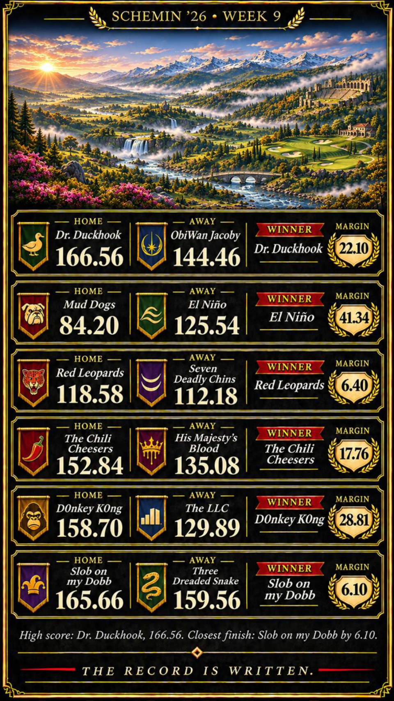
published_memo_precedent
35 source words · 15 seconds at 145 wpm. Dialogue/ADR not locked.
Sequential shot cards · editorial coverage
W10F-P04-S0102:48–02:54 · 6s
OPENING / LAYOUT SCHEMATIC
Camera: Broad landscape across the open ceremonial field toward the existing arbiter pavilion; exact scores inhabit a temporary, scene-lit result standard.
Blocking: Orient the audience in the already described location: Pavilion and arrival roads under a passing cloud band.
Dramatic purpose: Establish correct time, weather, light and landmark; no new event.
Movement: Stable orienting push or completely fixed geography master
End state: Compact remains a civic scoreboard location only. Remove every implication that the D0nkey K0ng rodeo happens here.
Stage: STAGED BOARD ONLY. Independently verify faces, geography, sound, rights and release before filming.
The Highland Rodeo
W10-P05 · SCENE 05
Everybody Gets a View
The Chili Cheesers × D0nkey K0ng · 7 shots
00:03:16 → 00:04:17
61 seconds
Source narration and scene premise
Last week The Chili Cheesers had a whole cookout laughing at His Majesty’s Blood. At the Highland rail he gets the same laugh by copying D0nkey K0ng’s four-hoofed stance. He does it again, lower this time, and bows to the gallery. The centaur stops dead. By the time the outlaw straightens, the rope is off D0nkey K0ng’s shoulder. The service gate is still open. The Chili Cheesers makes for it in his good boots.
Score: Plucked strings and percussion; score drops before catch
Foley: Boots, four hooves, rope, wet dirt, hand-tied knot
Time logic: CHRONOLOGICAL_SAME_LOCATION
Scene exit: Page turn follows the open loop toward The Chili Cheesers, not yet a completed capture.
Reference images / not story frames
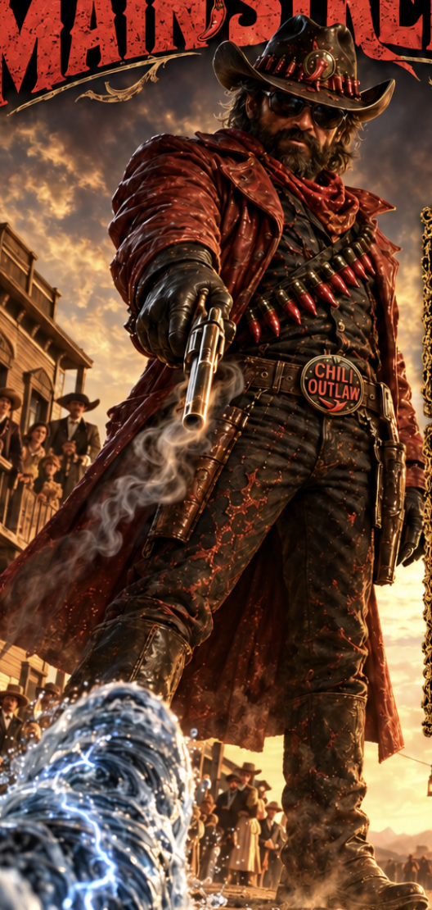
CHAR-BRANDON-PRYOR
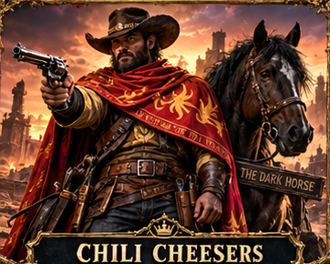
CHAR-BRANDON-PRYOR
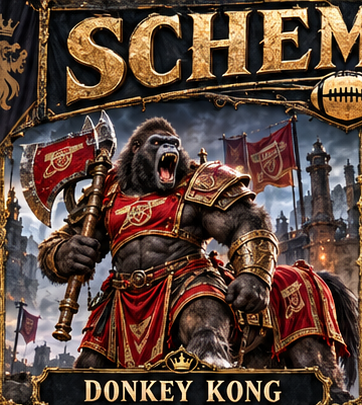
CHAR-WILSON-LOOK
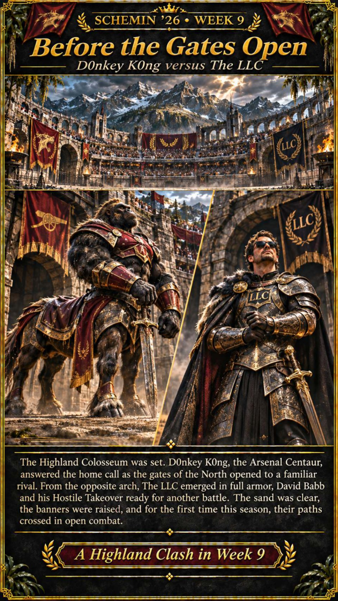
published_memo_precedent
74 source words · 31 seconds at 145 wpm. Dialogue/ADR not locked.
Sequential shot cards · editorial coverage
W10F-P05-S0103:16–03:23 · 7s
OPENING / LAYOUT SCHEMATIC
Camera: Low rail-side wide diagonal, The Chili Cheesers at the rail on screen-left, D0nkey K0ng drawing his rope on screen-right after Chili imitates him; gate rear-left.
Blocking: Orient the audience in the already described location: Same gate, rails, crowd and sheltered lamps
Dramatic purpose: Establish correct time, weather, light and landmark; no new event.
Movement: Stable orienting push or completely fixed geography master
Camera: Same-axis reverse/hold, preserve sequence time logic
Blocking: Continue already sourced movement or pause: D0nkey K0ng stiffens at the imitation and draws his own lasso off his shoulder. As the loop rises the outlaw bolts.
Dramatic purpose: Preserve character choice without adding unscripted events.
Movement: Slow performance hold or continuity-preserving reverse, no extra plot
Do not alter: Preserve provider home/away separately · D0nkey K0ng one body with four equine legs · The Chili Cheesers is tied character, not Red Leopards · No fantasy main-cast crowd teleportation · Rope catch precedes deliberate stopped binding · No title transfer inferred
End state: D0nkey K0ng rope in motion; hat still worn
Stage: STAGED BOARD ONLY. Independently verify faces, geography, sound, rights and release before filming.
W10-P06 · SCENE 06
The Ring Runs Out
The Chili Cheesers × D0nkey K0ng · 7 shots
00:04:17 → 00:05:18
61 seconds
Source narration and scene premise
The Chili Cheesers cuts hard for the service gate. The lasso reaches him before he reaches it. He keeps running for a fraction too long, turning the capture into a skid through the muddy groove he made himself. The crowd's reaction is no longer the sound he came to produce. D0nkey K0ng has not needed the axe. The rope, the arena and The Chili Cheesers’ own decision to flee have done the work.
Do not alter: Preserve provider home/away separately · D0nkey K0ng one body with four equine legs · The Chili Cheesers is tied character, not Red Leopards · No fantasy main-cast crowd teleportation · Rope catch precedes deliberate stopped binding · No title transfer inferred
End state: Rope caught; The Chili Cheesers down; hat displaced
Stage: STAGED BOARD ONLY. Independently verify faces, geography, sound, rights and release before filming.
W10-P07 · SCENE 07
No Private Exit
The Chili Cheesers × D0nkey K0ng · 5 shots
00:05:18 → 00:06:15
57 seconds
Source narration and scene premise
D0nkey K0ng finishes the binding in the center ring, with all four hooves planted and the rope's path plain to see. The Chili Cheesers lies hogtied, hat just out of reach, looking back at the entrance where he had expected to be the attraction. Last week he had served humiliation to a champion. This week the Commonwealth has found a new course for the menu.
Score: Plucked strings and percussion; score drops before catch
Foley: Boots, four hooves, rope, wet dirt, hand-tied knot
Time logic: SIMULTANEOUS_SAME_LOCATION
Scene exit: Visual match on churned wet ground leads to the old soccer ruts—not a claim that the two venues adjoin.
Reference images / not story frames
CHAR-BRANDON-PRYOR
CHAR-BRANDON-PRYOR
CHAR-WILSON-LOOK
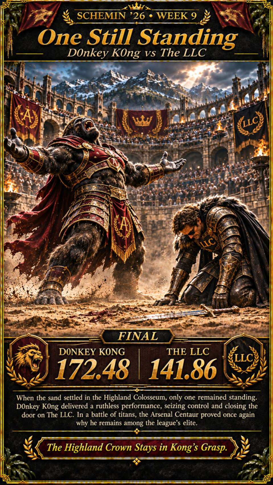
published_memo_precedent
65 source words · 27 seconds at 145 wpm. Dialogue/ADR not locked.
Sequential shot cards · editorial coverage
W10F-P07-S0105:18–05:27 · 9s
OPENING / LAYOUT SCHEMATIC
Camera: Low public aftermath: The Chili Cheesers lies foreground with the wet rope secured by visible handwork, hat beside him; behind, D0nkey K0ng is one integrated gorilla-centaur with all four hooves planted. Same wet center-ring mud, gate and galleries. No championship belt or property transfer appears.
Blocking: Orient the audience in the already described location: Same crowd laughing, with gate visibly distant
Dramatic purpose: Establish correct time, weather, light and landmark; no new event.
Movement: Stable orienting push or completely fixed geography master
Do not alter: Preserve provider home/away separately · D0nkey K0ng one body with four equine legs · The Chili Cheesers is tied character, not Red Leopards · No fantasy main-cast crowd teleportation · Rope catch precedes deliberate stopped binding · No title transfer inferred
End state: Wet rope and mud progression; no property or Belt transfer
Stage: STAGED BOARD ONLY. Independently verify faces, geography, sound, rights and release before filming.
The Storm
W10-P08 · SCENE 08
One More Bag
Red Leopards × El Niño · 7 shots
00:06:15 → 00:07:15
60 seconds
Source narration and scene premise
Red Leopards sees El Niño’s storm roll over the eastern terrace. He stacks sandbags beside the damaged goal. For a moment the line holds. Then a thread of brown water comes out behind his boot. It has followed last week’s tire rut around the end of the line. In 2022 he had beaten El Niño twice and carried thirteen wins into the semifinal. He remembers how fast that advantage went, too.
Ambience: Coastal rain first; inland squall later, no instant geography
Score: Bowed low strings and damaged-theme reprise
Foley: Sandbags, surface runoff, long branch crack, rim contact
Time logic: CHRONOLOGICAL_SAME_LOCATION
Scene exit: Use a clear temporal cut to the later Central Basin court; mud carried on Red establishes continuity without false adjacency.
Reference images / not story frames
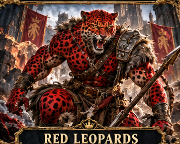
CHAR-KEVIN-ZEEK
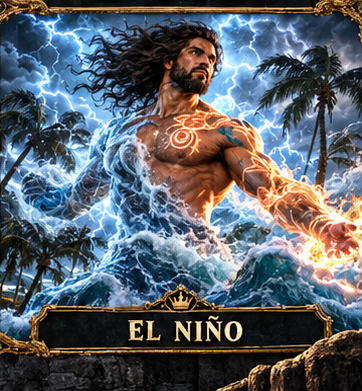
CHAR-MANNING-WELTY
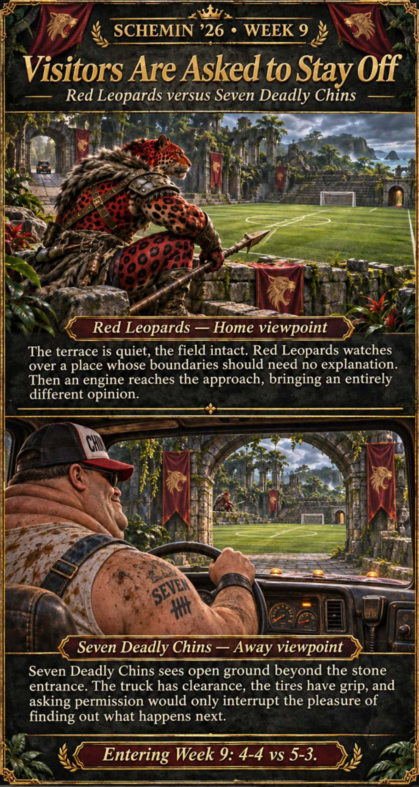
published_location_geometry
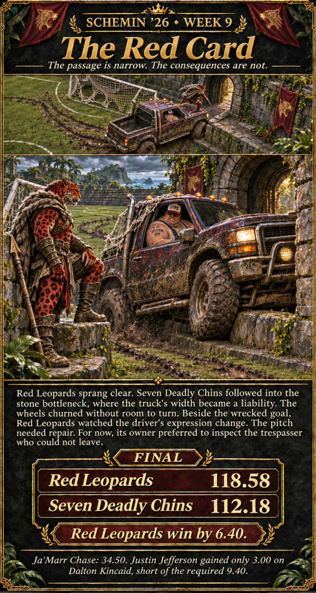
published_location_geometry
71 source words · 30 seconds at 145 wpm. Dialogue/ADR not locked.
Sequential shot cards · editorial coverage
W10F-P08-S0106:15–06:22 · 7s
OPENING / LAYOUT SCHEMATIC
Camera: Open wide on El Niño’s storm rolling over the terrace, then low at the known soccer-terrace edge: Red Leopards actively lowers a sandbag in the foreground while a shallow trickle curls around its exposed end into the old tire rut. The damaged goal, stone approach and narrow exit retain their Week 9 positions; no basketball basket or tidal wall.
Blocking: Orient the audience in the already described location: The low-side overflow follows the retaining edge. Far across the pitch, El Niño is a small recognizable embodied elemental watching the rain; never a face in cloud. The narrow exit and unresolved Week 9 truck position are not magically repaired.
Dramatic purpose: Establish correct time, weather, light and landmark; no new event.
Movement: Stable orienting push or completely fixed geography master
Do not alter: Hoop stays right wall mounted before branch hit · Keep soccer goal damage and ruts · Truck recovery unresolved · Separate regions with elapsed-time/location bridge · Shallow field overflow only · El Niño remains embodied · Despair not playoff elimination · 2022 dialogue is newly authored fictional dialogue, not archive quote
End state: Sandbags wet, water shallow, old damage retained
Stage: STAGED BOARD ONLY. Independently verify faces, geography, sound, rights and release before filming.
W10-P09 · SCENE 09
The Place That Answered Once
Red Leopards × El Niño · 6 shots
00:07:15 → 00:08:16
61 seconds
Source narration and scene premise
Later, on the road inland to the Forgotten Court in the Central Basin, Red Leopards climbs over a fallen trunk. Farther up the slope another tree tips, roots and all. From the court entrance he sees the gaps they left across his territory. For a second the familiar hoop is still there on the right-hand wall. Then the tree above it goes over. One heavy limb catches the backboard on its way down.
Camera: Same-axis reverse/hold, preserve sequence time logic
Blocking: Continue already sourced movement or pause: At the court a tree tips from the vegetation margin and its heavy limb strikes the right-wall backboard. Red watches from clear of its path.
Dramatic purpose: Preserve character choice without adding unscripted events.
Movement: Slow performance hold or continuity-preserving reverse, no extra plot
Do not alter: Hoop stays right wall mounted before branch hit · Keep soccer goal damage and ruts · Truck recovery unresolved · Separate regions with elapsed-time/location bridge · Shallow field overflow only · El Niño remains embodied · Despair not playoff elimination · 2022 dialogue is newly authored fictional dialogue, not archive quote
End state: Explicit elapsed-time move to Central Basin; falling branch
Stage: STAGED BOARD ONLY. Independently verify faces, geography, sound, rights and release before filming.
W10-P10 · SCENE 10
That Cold Again
Red Leopards × El Niño · 6 shots
00:08:16 → 00:09:18
62 seconds
Source narration and scene premise
The hoop hangs wrong. Red Leopards sits beneath it with the mud of his failed sandbag line still on him. El Niño laughs across the rain-swept court, and the 2022 semifinal comes back in full: 116.32 to 97.96, a 13–1 favorite sent home, and El Niño eventually lifting that season's title. Red Leopards is not eliminated today. That is almost the cruelest part. He still has to decide whether to get up and repair another thing.
Ambience: Coastal rain first; inland squall later, no instant geography
Score: Bowed low strings and damaged-theme reprise
Foley: Sandbags, surface runoff, long branch crack, rim contact
Time logic: SIMULTANEOUS_SAME_LOCATION
Scene exit: The moving leaves and rain continue into The Roads Between as weather, not a character teleport.
Reference images / not story frames
CHAR-KEVIN-ZEEK
CHAR-MANNING-WELTY
published_location_geometry
published_location_geometry
76 source words · 32 seconds at 145 wpm. Dialogue/ADR not locked.
Sequential shot cards · editorial coverage
W10F-P10-S0108:16–08:25 · 9s
OPENING / LAYOUT SCHEMATIC
Camera: Lower still aftermath on the same axis: Red Leopards gathers the net beneath the damaged right-wall hoop, the embodied El Niño across the court and fallen trunks visible beyond.
Blocking: Orient the audience in the already described location: El Niño visibly humanoid laughing within the storm’s light
Dramatic purpose: Establish correct time, weather, light and landmark; no new event.
Movement: Stable orienting push or completely fixed geography master
Do not alter: Hoop stays right wall mounted before branch hit · Keep soccer goal damage and ruts · Truck recovery unresolved · Separate regions with elapsed-time/location bridge · Shallow field overflow only · El Niño remains embodied · Despair not playoff elimination · 2022 dialogue is newly authored fictional dialogue, not archive quote
End state: Broken hoop and emotional consequence proposed; river and court remain separate
Stage: STAGED BOARD ONLY. Independently verify faces, geography, sound, rights and release before filming.
The Roads Between
W10-P11 · SCENE 11
THE ROADS BETWEEN
Commonwealth intelligence / editorial · 6 shots
00:09:18 → 00:10:04
46 seconds
Source narration and scene premise
On the exposed coast, water finds the old damage. Farther inland, gusts take the trees and banners. In the southern wetlands, runoff arrives later through familiar channels. Up here, travelers tighten their covers and the lamps come on early. The Commonwealth has not changed places. The weather has reached more of them.
Ambience: Regional coastal water, inland road wind, later wetland channels
Score: Spacious three-region sonic bridge
Foley: Stone, wagon fabric, lake wind, delayed runoff
Time logic: EDITORIAL_REGIONAL_VIEWS_NOT_ADJACENT
Scene exit: The storm’s noise yields to the temple’s waterfall, then a man-made interruption.
Reference images / not story frames
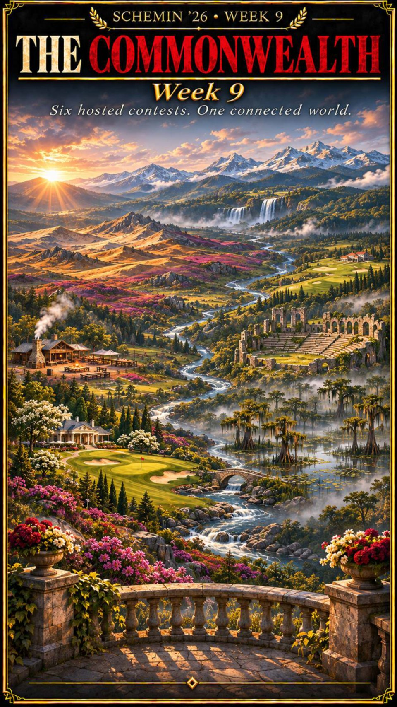
published_memo_precedent
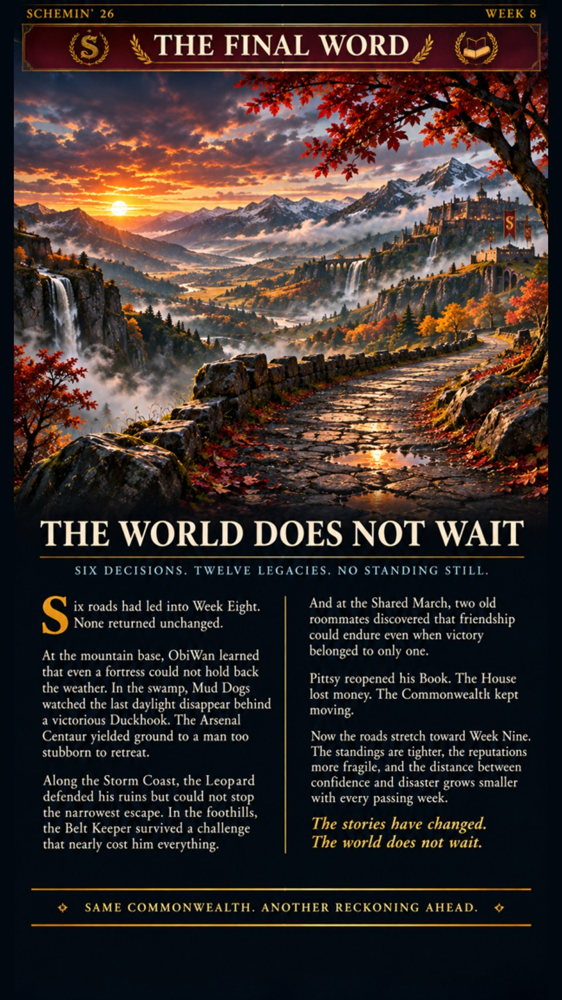
published_memo_precedent
52 source words · 22 seconds at 145 wpm. Dialogue/ADR not locked.
Sequential shot cards · editorial coverage
W10F-P11-S0109:18–09:24 · 6s
OPENING / LAYOUT SCHEMATIC
Camera: High oblique along the known connector approaching the stone bridge, with road, water and weather in successive depths.
Blocking: Orient the audience in the already described location: Cloud layers on the eastern horizon; no unsupported view of the Jedi base or Red Leopards’ actual field.
Dramatic purpose: Establish correct time, weather, light and landmark; no new event.
Movement: Stable orienting push or completely fixed geography master
End state: No invented miles, exact travel time, single simultaneous storm clock or identical rain severity in every region.
Stage: STAGED BOARD ONLY. Independently verify faces, geography, sound, rights and release before filming.
The Temple
W10-P12 · SCENE 12
Just as the House Settles
Three Dreaded Snake × Seven Deadly Chins · 6 shots
00:10:04 → 00:11:03
59 seconds
Source narration and scene premise
There had been a time when the temple's waterfall was the loudest thing the family heard. Now a jackhammer bites the courtyard paving, sending pale chips against steps worn smooth over years. Behind the upstairs door the newborn starts crying. Three Dreaded Snake's partner calls for help. Three heads reach the balcony at once, none of them prepared for the sight of Seven Deadly Chins enjoying himself below.
Do not alter: Three Dreaded Snake exactly three heads one body · Seven Deadly Chins on courtyard below · Family contextual/offscreen; no invented spouse identity · Actual requested jackhammer and music · Compressor/hose/speaker coherent · Concrete patch grows consistently · No thunder competing at comic payoff · No assumed Book reopening
End state: Baby awake; family upset; first concrete damage
Stage: STAGED BOARD ONLY. Independently verify faces, geography, sound, rights and release before filming.
W10-P13 · SCENE 13
He Heard You
Three Dreaded Snake × Seven Deadly Chins · 7 shots
00:11:03 → 00:12:05
62 seconds
Source narration and scene premise
Three Dreaded Snake shouts down to stop. Seven Deadly Chins lets the hammer go quiet long enough to look up. For one hopeful breath the waterfall fills the court again. Three Dreaded Snake turns toward the crying child. Then Seven Deadly Chins laughs, turns the music higher and plants the bit in the next square of paving. The insult is not that he could not hear. It is that he listened and chose the encore.
Do not alter: Three Dreaded Snake exactly three heads one body · Seven Deadly Chins on courtyard below · Family contextual/offscreen; no invented spouse identity · Actual requested jackhammer and music · Compressor/hose/speaker coherent · Concrete patch grows consistently · No thunder competing at comic payoff · No assumed Book reopening
End state: Seven Deadly Chins knowingly refuses the request; music louder
Stage: STAGED BOARD ONLY. Independently verify faces, geography, sound, rights and release before filming.
W10-P14 · SCENE 14
No Quiet Hours
Three Dreaded Snake × Seven Deadly Chins · 5 shots
00:12:05 → 00:13:08
63 seconds
Source narration and scene premise
Broken concrete lies in a widening crescent around the same jackhammer. Seven Deadly Chins dances badly to his own music, delighted by an audience of three furious heads. Upstairs, the father has a crying baby and an angry partner; downstairs, his visitor has a fresh piece of ground to destroy. Last season Three Dreaded Snake beat Seven Deadly Chins twice. This week Seven Deadly Chins has discovered a form of revenge that needs neither a trophy nor permission.
Do not alter: Three Dreaded Snake exactly three heads one body · Seven Deadly Chins on courtyard below · Family contextual/offscreen; no invented spouse identity · Actual requested jackhammer and music · Compressor/hose/speaker coherent · Concrete patch grows consistently · No thunder competing at comic payoff · No assumed Book reopening
End state: Same expanded hole; family frustration unresolved; no Book reopening
Stage: STAGED BOARD ONLY. Independently verify faces, geography, sound, rights and release before filming.
The Swamp
W10-P15 · SCENE 15
The Swamp Declares a Blockade
Mud Dogs × Slob on my Dobb · 6 shots
00:13:08 → 00:14:07
59 seconds
Source narration and scene premise
Mud Dogs plants himself beside the old swamp entrance marker, blocking the raised service strip with the confidence of a landlord. Beyond him comes a long flatbed of beer, driven by Slob on my Dobb with the ease of a man on a familiar delivery run. The swamp is wet, the old racing ruts are full, and the cargo straps are tight. Mud Dogs barks a warning. Slob on my Dobb checks the mirror.
Do not alter: High-clearance flatbed active vehicle proposal · Kegs/crates securely strapped · Raised strip supports heavy load · Existing failed low racing lane remains · Slob on my Dobb unaffected at routine pace · No truck or cargo contact with hound · Cancun is conditional joke until audited · No permanent conquest or title transfer
End state: Truck and correct firm route established
Stage: STAGED BOARD ONLY. Independently verify faces, geography, sound, rights and release before filming.
W10-P16 · SCENE 16
Same Speed
Mud Dogs × Slob on my Dobb · 7 shots
00:14:07 → 00:15:09
62 seconds
Source narration and scene premise
The truck does not stop. Slob on my Dobb does not even make a show of defiance. He keeps the wheels on the firm strip, guides the kegs around the bend and rolls past at ordinary speed. Mud Dogs follows on the soft shoulder, barking harder as the trailer grows longer and less interested in him. The joke is not that Slob on my Dobb has conquered the swamp. It is that the swamp has ceased to inconvenience his schedule.
Do not alter: High-clearance flatbed active vehicle proposal · Kegs/crates securely strapped · Raised strip supports heavy load · Existing failed low racing lane remains · Slob on my Dobb unaffected at routine pace · No truck or cargo contact with hound · Cancun is conditional joke until audited · No permanent conquest or title transfer
End state: No collision, struggle, flying keg or seized territory
Stage: STAGED BOARD ONLY. Independently verify faces, geography, sound, rights and release before filming.
W10-P17 · SCENE 17
Cancún Is Calling
Mud Dogs × Slob on my Dobb · 5 shots
00:15:09 → 00:16:07
58 seconds
Source narration and scene premise
The last tail lamp disappears into reeds. Mud Dogs stands under his own sign beside empty stands and flooded racing scars, watching a postcard for Cancún flutter against the post. It is a taunt, not a ticket: at 2–8, a narrow division-title route still exists. Another loss closes it. For now, Slob on my Dobb has delivered the beer, and Mud Dogs has been left with the silence after a truck.
Do not alter: High-clearance flatbed active vehicle proposal · Kegs/crates securely strapped · Raised strip supports heavy load · Existing failed low racing lane remains · Slob on my Dobb unaffected at routine pace · No truck or cargo contact with hound · Cancun is conditional joke until audited · No permanent conquest or title transfer
End state: Delivery succeeds; humiliation and conditional vacation threat, no elimination claim
Stage: STAGED BOARD ONLY. Independently verify faces, geography, sound, rights and release before filming.
Public Consequences
W10-P18 · SCENE 18
WHY THE BOARD MOVED
Commonwealth intelligence / editorial · 4 shots
00:16:07 → 00:16:52
45 seconds
Source narration and scene premise
Christian McCaffrey’s 52.60 powers Slob on my Dobb. His Majesty’s Blood receives 113.86 from Brock Purdy, Chuba Hubbard and Jaxon Smith-Njigba; The LLC gets 103.66 from Joe Burrow, Isaiah Likely and Parker Washington. Jahmyr Gibbs answers with 47.40 for Dr. Duckhook. El Niño wins with George Pickens’ 44.50 unused on the bench. Derrick Henry and Mark Andrews add 36.20 on Monday, but ObiWan Jacoby still finishes 37.43 behind The LLC.
Scene exit: The scored-performance folio yields to a newly arrived availability report.
Reference images / not story frames
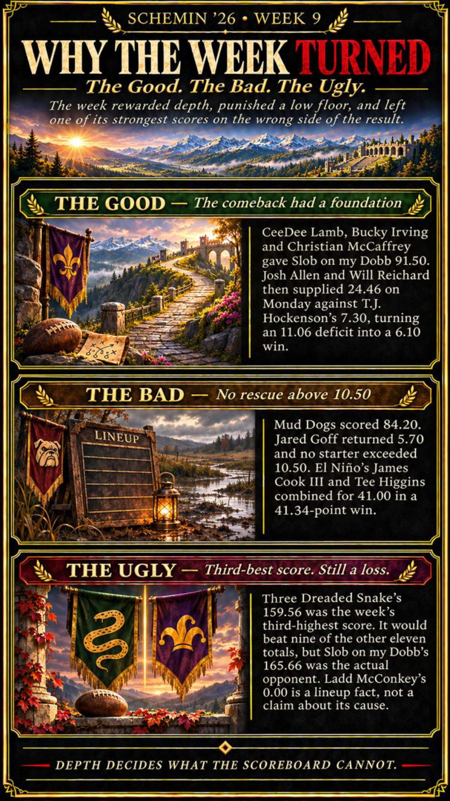
published_memo_precedent
70 source words · 29 seconds at 145 wpm. Dialogue/ADR not locked.
Sequential shot cards · editorial coverage
W10F-P18-S0116:07–16:17 · 10s
OPENING / LAYOUT SCHEMATIC
Camera: Deep oblique across an old scoring desk toward open record-hall arches; exact concise performance lettering follows the open illustrated air and existing ledger surface.
Blocking: Orient the audience in the already described location: Receding shelves and a courtyard lamp; keep the art continuous behind copy.
Dramatic purpose: Establish correct time, weather, light and landmark; no new event.
Movement: Stable orienting push or completely fixed geography master
Do not alter: Guaranteed final award · Bench points added to actual matchup score · Claim that hindsight proves a lineup choice irrational
End state: Performance uses the current starter/bench distinction. Injury consequences move to P34 so one illustrated page is not overloaded.
Stage: STAGED BOARD ONLY. Independently verify faces, geography, sound, rights and release before filming.
W10-P34 · SCENE 19
THE COST OF SUNDAY
Commonwealth intelligence / editorial · 5 shots
00:16:52 → 00:17:46
54 seconds
Source narration and scene premise
Dr. Duckhook’s Drake Maye faces an extended absence, but New England has not confirmed a season-ending outcome. Mud Dogs’ Woody Marks missed Monday’s practice with a concussion ahead of Thursday. The Chili Cheesers awaits Brock Bowers’ day-to-day ankle decision. Three Dreaded Snake monitors A.J. Brown’s hamstring exit. Aidan Hutchinson’s confirmed season-ending ACL loss affects His Majesty’s Blood through Lions D/ST. The LLC’s Michael Wilson is out for the season from his November 8 neck injury. ObiWan Jacoby’s Puka Nacua cannot return before Week 15; Red Leopards’ Lamar Jackson has no fixed return date.
Do not alter: New medical diagnosis from a fantasy slot flag · Guaranteed return or future starter without confirmation · Final Week10 record or clinch from live score · New permanent location or belt transfer
End state: Do not turn all game exits into season-ending diagnoses. Keep indirect D/ST exposure, existing injury dates, and reported-vs-confirmed language visible.
Stage: STAGED BOARD ONLY. Independently verify faces, geography, sound, rights and release before filming.
The Birthday
W10-P19 · SCENE 20
A Very Generous Guest
Dr. Duckhook × His Majesty's Blood · 6 shots
00:17:46 → 00:18:46
60 seconds
Source narration and scene premise
The dining hall in Jackson is full enough that the guests must turn sideways between the streamers and the cakes. Dr. Duckhook is the birthday boy, a host in his own kingdom of polished tables and familiar club service. His Majesty's Blood arrives beneath the storm-dark windows carrying an enormous present, belt visible and sword irrelevant. Last year Dr. Duckhook came within four tenths of stopping this rival's championship path. Tonight he opens the door to him.
Ambience: Established warm gathering with appropriate room acoustics
Score: Small original comedic ensemble; let reveal breathe
Foley: Paper wrap, box, meal presentation, distinct cake contact
Time logic: SIMULTANEOUS_SAME_LOCATION
Scene exit: Eye-lines converge on the still-wrapped box.
Reference images / not story frames
CHAR-ZACH-WILSON
CHAR-AUSTIN-BYARS
CHAR-AUSTIN-BYARS
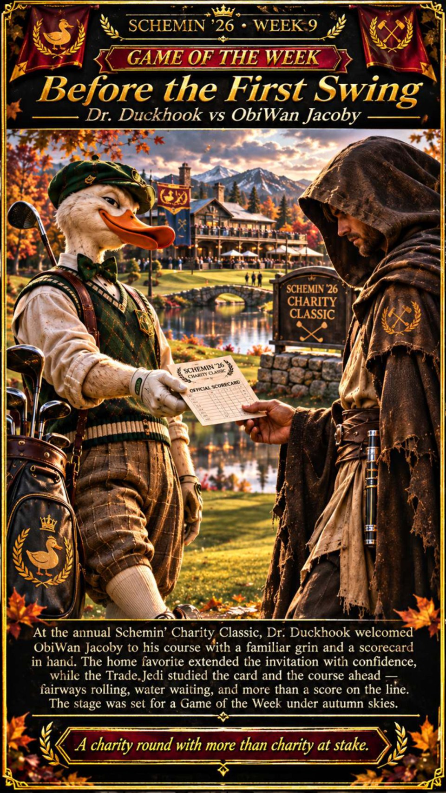
published_memo_precedent
77 source words · 32 seconds at 145 wpm. Dialogue/ADR not locked.
Sequential shot cards · editorial coverage
W10F-P19-S0117:46–17:54 · 8s
OPENING / LAYOUT SCHEMATIC
Camera: Wide view from just inside the dining-hall entrance, slightly below the standing guests’ eyeline. A long table leads toward Dr. Duckhook’s birthday chair, while His Majesty's Blood and his oversized wrapped box enter along a clear aisle. Show the hall as one continuous inhabited space.
Blocking: Orient the audience in the already described location: Consistent anonymous guests, a worn service doorway, maintained woodwork and tall cool storm windows provide depth and years of ordinary club use.
Dramatic purpose: Establish correct time, weather, light and landmark; no new event.
Movement: Stable orienting push or completely fixed geography master
Camera: Low close third-person following the gift-bearing champion down the dining aisle
Blocking: His Majesty’s Blood enters toward Dr. Duckhook with the oversized wrapped box.
Dramatic purpose: The gift and controlled entrance create apparent generosity.
Movement: Stabilized low push with silhouette and eyeline lock
Source: W10-P19-V01 · PENDING_MOTION_TEST
W10F-P19-S0318:13–18:27 · 14s
SOURCE / LAYOUT SCHEMATIC
Camera: Reverse medium from beside the birthday chair toward the same aisle
Blocking: Dr. Duckhook welcomes the guest; the separate cake remains on its established sideboard.
Dramatic purpose: The host’s social obligation and the rival’s arrival are seen from the other side.
Movement: Lateral tracking keeping actors and prop path compatible
Source: W10-P19-V02 · PENDING_MOTION_TEST
W10F-P19-S0418:27–18:32 · 5s
INSERT / LAYOUT SCHEMATIC
Camera: Detail in the same physical space
Blocking: Existing foreground/material only: Warm tableware and streamers frame His Majesty's Blood carrying the wrapped box; a clear serving-table edge establishes where it will be set down.
Dramatic purpose: Ground the fiction in tactility and allow Foley/editorial breath.
Movement: Tactile macro or same-axis insert; no new set or props
Do not alter: No club ownership transfer · No membership rule invention · No championship declaration · No repeat last-putt finish; the birthday setting must determine the new payoff · No birthday sword-and-club duel, rail trip or cake-table collapse · 200 BURGER is a gift label and scoring-milestone joke, not an exact final score · No invented age, construction date, named guest or championship transfer · Dr. Duckhook white duck head/orangebill/green golfer · His Majesty's Blood hood shadow/red eyes/blackarmor/crimsoncloak · Belt stays with His Majesty's Blood
End state: Gift set on table before opening · Cake remains on established sideboard · Warm hall and cool windows retain their positions
Stage: STAGED BOARD ONLY. Independently verify faces, geography, sound, rights and release before filming.
W10-P20 · SCENE 21
The 200 Burger
Dr. Duckhook × His Majesty's Blood · 6 shots
00:18:46 → 00:19:41
55 seconds
Source narration and scene premise
Dr. Duckhook pulls the ribbon, raises the lid and discovers a double-decker hamburger big enough to have a title: 200 BURGER. For a moment he tries to smile like a gracious host. Then the guests understand what the number means. His Majesty's Blood has given him a celebration he can neither refuse nor explain away. The separate birthday cake waits on the sideboard.
Ambience: Established warm gathering with appropriate room acoustics
Score: Small original comedic ensemble; let reveal breathe
Foley: Paper wrap, box, meal presentation, distinct cake contact
Time logic: CHRONOLOGICAL_SAME_LOCATION
Scene exit: The already visible separate cake becomes the instrument of the payoff.
Reference images / not story frames
CHAR-ZACH-WILSON
CHAR-AUSTIN-BYARS
CHAR-AUSTIN-BYARS
published_memo_precedent
63 source words · 27 seconds at 145 wpm. Dialogue/ADR not locked.
Sequential shot cards · editorial coverage
W10F-P20-S0118:46–18:53 · 7s
OPENING / LAYOUT SCHEMATIC
Camera: Table-height three-quarter view along the established gift-opening axis. The open box reveals a colossal double-decker hamburger with both stacked layers legible; 200 BURGER is an earned prop label. Dr. Duckhook reacts opposite His Majesty’s Blood; the separate birthday cake remains on the sideboard. Preserve the window mullion, service-door angle and guests.
Blocking: Orient the audience in the already described location: The separate cake stays on the same sideboard, candles cleared in preparation; gold light and storm windows persist behind the birthday decorations.
Dramatic purpose: Establish correct time, weather, light and landmark; no new event.
Movement: Stable orienting push or completely fixed geography master
Blocking: Existing foreground/material only: Open wrapping, displaced lid and the unmistakably large double-decker hamburger with exact small flag lettering 200 BURGER.
Dramatic purpose: Ground the fiction in tactility and allow Foley/editorial breath.
Movement: Tactile macro or same-axis insert; no new set or props
Do not alter: No club ownership transfer · No membership rule invention · No championship declaration · No repeat last-putt finish; the birthday setting must determine the new payoff · No birthday sword-and-club duel, rail trip or cake-table collapse · 200 BURGER is a gift label and scoring-milestone joke, not an exact final score · No invented age, construction date, named guest or championship transfer · Dr. Duckhook white duck head/orangebill/green golfer · His Majesty's Blood hood shadow/red eyes/blackarmor/crimsoncloak · Belt stays with His Majesty's Blood
End state: Box stays open and burger remains intact · Cake is ready to lift with candles cleared · Dr. Duckhook’s frosting has not appeared yet
Stage: STAGED BOARD ONLY. Independently verify faces, geography, sound, rights and release before filming.
W10-P21 · SCENE 22
Many Unhappy Returns
Dr. Duckhook × His Majesty's Blood · 4 shots
00:19:41 → 00:20:38
57 seconds
Source narration and scene premise
His Majesty's Blood presses that cake squarely into Dr. Duckhook's face. Frosting coats the orange bill and the front of the green vest while the warm dining hall erupts. The burger remains magnificent in its box, untouched. Last week The Chili Cheesers made His Majesty's Blood the dish at a public cookout. This week the champion has found a new place setting, and the birthday boy is wearing dessert.
Ambience: Established warm gathering with appropriate room acoustics
Score: Small original comedic ensemble; let reveal breathe
Foley: Paper wrap, box, meal presentation, distinct cake contact
Time logic: ONE_CONTINUOUS_MOMENT
Scene exit: Contrast warm party humiliation with cold mountain resistance; this is an editorial cut, not simultaneous travel.
Reference images / not story frames
CHAR-ZACH-WILSON
CHAR-AUSTIN-BYARS
CHAR-AUSTIN-BYARS
published_memo_precedent
69 source words · 29 seconds at 145 wpm. Dialogue/ADR not locked.
Sequential shot cards · editorial coverage
W10F-P21-S0119:41–19:53 · 12s
OPENING / LAYOUT SCHEMATIC
Camera: Unobstructed three-quarter cake-to-face payoff: His Majesty’s Blood has lifted the separate cake with candles removed and presses it onto Dr. Duckhook’s orange bill. Hands, cake contact and frosting on the green vest remain visible. The untouched double-decker burger stays in its open box to the side; table and witnesses stay fixed.
Blocking: Orient the audience in the already described location: The same celebration continues under warm light, with the same anonymous guests witnessing the humiliation and cooler storm color held at the windows.
Dramatic purpose: Establish correct time, weather, light and landmark; no new event.
Movement: Stable orienting push or completely fixed geography master
Camera: Unobstructed three-quarter contact wide enough for both props
Blocking: His Majesty’s Blood presses the separate soft cake, candles removed, onto the recognizable orange bill; the untouched burger stays in its open box.
Dramatic purpose: Cake contact, witnesses and the still-visible gift resolve the social mechanism in one strong image.
Movement: Crane or slow tracking master with static spatial anchors
Source: W10-P21-V01 · PENDING_MOTION_TEST
W10F-P21-S0320:20–20:28 · 8s
INSERT / LAYOUT SCHEMATIC
Camera: Detail in the same physical space
Blocking: Existing foreground/material only: Soft cake and frosting visibly contact Dr. Duckhook’s face; part of orange bill, eyes and green golf cap remain recognizable. His body remains supported by his original position.
Dramatic purpose: Ground the fiction in tactility and allow Foley/editorial breath.
Movement: Tactile macro or same-axis insert; no new set or props
Do not alter: No club ownership transfer · No membership rule invention · No championship declaration · No repeat last-putt finish; the birthday setting must determine the new payoff · No birthday sword-and-club duel, rail trip or cake-table collapse · 200 BURGER is a gift label and scoring-milestone joke, not an exact final score · No invented age, construction date, named guest or championship transfer · Dr. Duckhook white duck head/orangebill/green golfer · His Majesty's Blood hood shadow/red eyes/blackarmor/crimsoncloak · Belt stays with His Majesty's Blood
End state: Dr. Duckhook’s face and vest carry frosting · Burger remains on display · Guests remember the witnessed birthday humiliation · His Majesty's Blood retains belt and identity; no venue destruction or ownership change
Stage: STAGED BOARD ONLY. Independently verify faces, geography, sound, rights and release before filming.
The Field Throne
W10-P22 · SCENE 23
The Empire Opens Fire
ObiWan Jacoby × The LLC · 7 shots
00:20:38 → 00:21:46
68 seconds
Source narration and scene premise
In 2024, eight tenths of a point settled their meeting in The LLC’s favor. ObiWan Jacoby remembers what a single opening is worth. Red fire crosses his mountain causeway. He turns it back with the green blade and the first battery folds into its own smoke. Above it, the man in the leather chair rises. The steps to his field throne room stand open. Behind ObiWan Jacoby, the lamp in the home arch still burns.
Ambience: Mountain weather, sheltered chair, separate exterior battery
Score: Low brass and suspended strings; silence at surrender refusal
Foley: Battery break, chair/boots on stairs, signal, lightning
Time logic: CHRONOLOGICAL_SAME_LOCATION
Scene exit: A view of the home arch makes surrender tempting. The lit blade answers.
Reference images / not story frames
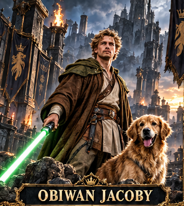
CHAR-JAKE-KALOPER
CHAR-DAVID-BABB
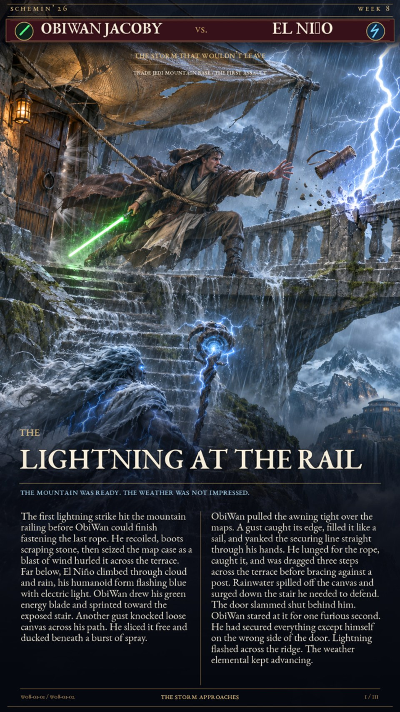
published_location_geometry
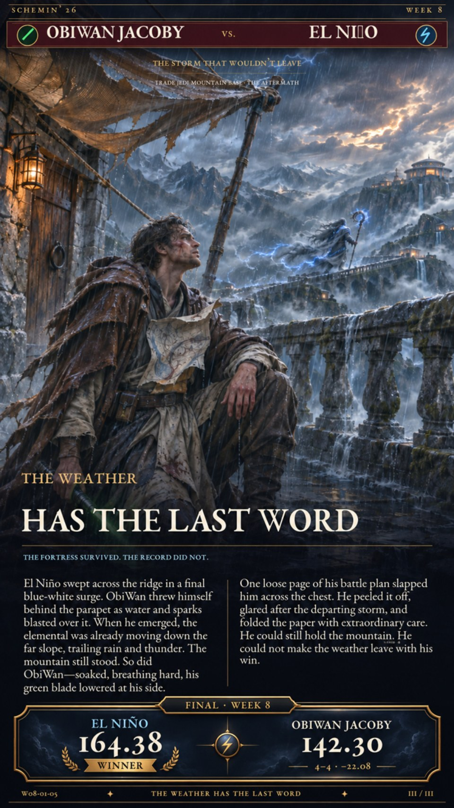
published_location_geometry
75 source words · 32 seconds at 145 wpm. Dialogue/ADR not locked.
Sequential shot cards · editorial coverage
W10F-P22-S0120:38–20:46 · 8s
OPENING / LAYOUT SCHEMATIC
Camera: One establishing strip names the causeway, command shelf and home arch. The deflection gets the dominant frame.
Blocking: Orient the audience in the already described location: ObiWan Jacoby deflects the shot and disables the first battery. The LLC rises above its smoke.
Dramatic purpose: Establish correct time, weather, light and landmark; no new event.
Movement: Stable orienting push or completely fixed geography master
Camera: Behind the inner arch, sight along the causeway
Blocking: The separate golden retriever remains in shelter while ObiWan Jacoby takes his lit blade onto the causeway.
Dramatic purpose: The warm arch establishes a reason to accept an offer later.
Movement: Purposeful static framing or subtle dolly, not unmotivated drone movement
Source: W10-P22-V01 · PENDING_MOTION_TEST
W10F-P22-S0320:59–21:12 · 13s
SOURCE / LAYOUT SCHEMATIC
Camera: Low cross-axis view of the field throne shelf
Blocking: The suited LLC sits in the leather chair; both batteries, the steps and the arch are visible on one axis.
Dramatic purpose: The reader sees the room and both sources of fire.
Movement: Stabilized low push with silhouette and eyeline lock
Source: W10-P22-V02 · PENDING_MOTION_TEST
W10F-P22-S0421:12–21:29 · 17s
SOURCE / LAYOUT SCHEMATIC
Camera: Along the returned bolt toward the front emplacement
Blocking: ObiWan Jacoby deflects the shot and disables the first battery. The LLC rises above its smoke.
Dramatic purpose: The destroyed battery earns an actual opening onto the steps.
Movement: Purposeful static framing or subtle dolly, not unmotivated drone movement
Source: W10-P22-V03 · PENDING_MOTION_TEST
W10F-P22-S0521:29–21:34 · 5s
INSERT / LAYOUT SCHEMATIC
Camera: Detail in the same physical space
Blocking: Existing foreground/material only: The separate golden retriever remains in shelter while ObiWan Jacoby takes his lit blade onto the causeway.
Dramatic purpose: Ground the fiction in tactility and allow Foley/editorial breath.
Movement: Tactile macro or same-axis insert; no new set or props
Do not alter: No home repossession · No new signed trade or pick rounds · No literal chess-rule/checkmate assertion · No secret third reserve piece · No belt · ObiWan blondhuman/earthrobes/greensword/goldenretriever/NO belt · The LLC human suited corporate raider with sunglasses/cigar/briefcase · Week9LLC armor is event-specific
End state: First battery smoking; the chair above the open steps is being vacated.
Stage: STAGED BOARD ONLY. Independently verify faces, geography, sound, rights and release before filming.
W10-P23 · SCENE 24
The Price of Quiet
ObiWan Jacoby × The LLC · 7 shots
00:21:46 → 00:22:51
65 seconds
Source narration and scene premise
The LLC comes down the steps to meet him. For a moment the two stand shoulder to shoulder. From here the warm arch looks almost small enough to cover with a hand. Lay the blade down before the chair, the executive offers, and the arch will be spared. ObiWan Jacoby looks back once. Then he steps across the last seam in the stone. The blade goes with him, still green.
Ambience: Mountain weather, sheltered chair, separate exterior battery
Score: Low brass and suspended strings; silence at surrender refusal
Foley: Battery break, chair/boots on stairs, signal, lightning
Time logic: CHRONOLOGICAL_SAME_LOCATION
Scene exit: The LLC wins the encounter after ObiWan Jacoby freely refuses the price.
Reference images / not story frames
CHAR-JAKE-KALOPER
CHAR-DAVID-BABB
published_location_geometry
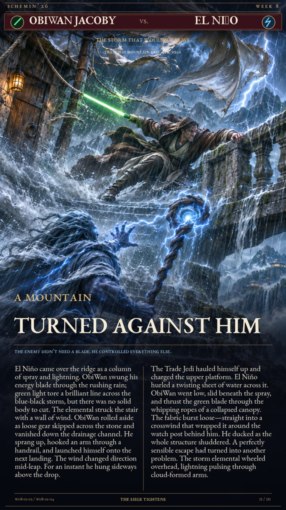
published_location_geometry
70 source words · 29 seconds at 145 wpm. Dialogue/ADR not locked.
Sequential shot cards · editorial coverage
W10F-P23-S0121:46–21:53 · 7s
OPENING / LAYOUT SCHEMATIC
Camera: Use a descending diagonal from the vacated chair to a two-shot of both men looking home. Isolate the lit blade crossing the seam.
Blocking: Orient the audience in the already described location: ObiWan Jacoby crosses the floor seam, his blade still lit. The LLC starts to circle into his sightline.
Dramatic purpose: Establish correct time, weather, light and landmark; no new event.
Movement: Stable orienting push or completely fixed geography master
Camera: Same-axis reverse/hold, preserve sequence time logic
Blocking: Continue already sourced movement or pause: ObiWan Jacoby crosses the floor seam, his blade still lit. The LLC starts to circle into his sightline.
Dramatic purpose: Preserve character choice without adding unscripted events.
Movement: Slow performance hold or continuity-preserving reverse, no extra plot
Do not alter: No home repossession · No new signed trade or pick rounds · No literal chess-rule/checkmate assertion · No secret third reserve piece · No belt · ObiWan blondhuman/earthrobes/greensword/goldenretriever/NO belt · The LLC human suited corporate raider with sunglasses/cigar/briefcase · Week9LLC armor is event-specific
End state: ObiWan Jacoby crosses with the blade still lit; the executive steps around to face him.
Stage: STAGED BOARD ONLY. Independently verify faces, geography, sound, rights and release before filming.
W10-P24 · SCENE 25
Unlimited Firepower
ObiWan Jacoby × The LLC · 6 shots
00:22:51 → 00:23:57
66 seconds
Source narration and scene premise
The LLC walks around until ObiWan Jacoby can see his face. Then he lifts his hand. Below the steps the surviving battery turns. The first white branch catches the green blade, the second lights the empty chair, and the flash swallows the defender’s silhouette. The arch lamp still burns. Derrick Henry and Mark Andrews supplied 36.20 on Monday. ObiWan Jacoby reached 166.53. The LLC held at 203.96, a margin of 37.43.
Ambience: Mountain weather, sheltered chair, separate exterior battery
Score: Low brass and suspended strings; silence at surrender refusal
Foley: Battery break, chair/boots on stairs, signal, lightning
Time logic: CHRONOLOGICAL_SAME_LOCATION
Scene exit: Carry both competitors alive into the closing regular season.
Reference images / not story frames
CHAR-JAKE-KALOPER
CHAR-DAVID-BABB
published_location_geometry
visual_storytelling_precedent
71 source words · 30 seconds at 145 wpm. Dialogue/ADR not locked.
Sequential shot cards · editorial coverage
W10F-P24-S0122:51–23:00 · 9s
OPENING / LAYOUT SCHEMATIC
Camera: Hold the raised hand and the battery origin within a single readable sightline. Use white space for the silhouette and preserve the dark outline of the arch.
Blocking: Orient the audience in the already described location: One earlier wreck, the warm home arch and the same sheltered retriever.
Dramatic purpose: Establish correct time, weather, light and landmark; no new event.
Movement: Stable orienting push or completely fixed geography master
Camera: Eye-level front three-quarter, below the empty chair
Blocking: The LLC completes his turn to face ObiWan Jacoby, raises a hand, and the surviving battery sends branching lightning across the field throne room. His opponent’s silhouette disappears in the light.
Dramatic purpose: A deliberate command delivers judgment; the surviving battery visibly supplies the charge.
Movement: Stabilized low push with silhouette and eyeline lock
Source: W10-P24-V01 · PENDING_MOTION_TEST
W10F-P24-S0323:20–23:36 · 16s
SOURCE / LAYOUT SCHEMATIC
Camera: Low reverse angle to the arch through the fading light
Blocking: The empty chair, smoking first battery and arch lamp remain visible. The retriever stays sheltered.
Dramatic purpose: The encounter is lost; the home and continuing character survive this week.
Movement: Stabilized low push with silhouette and eyeline lock
Source: W10-P24-V02 · PENDING_MOTION_TEST
W10F-P24-S0423:36–23:42 · 6s
INSERT / LAYOUT SCHEMATIC
Camera: Detail in the same physical space
Blocking: Existing foreground/material only: The LLC completes his turn to face ObiWan Jacoby, raises a hand, and the surviving battery sends branching lightning across the field throne room. His opponent’s silhouette disappears in the light.
Dramatic purpose: Ground the fiction in tactility and allow Foley/editorial breath.
Movement: Tactile macro or same-axis insert; no new set or props
Camera: Same-axis reverse/hold, preserve sequence time logic
Blocking: Continue already sourced movement or pause: The empty chair, smoking first battery and arch lamp remain visible. The retriever stays sheltered.
Dramatic purpose: Preserve character choice without adding unscripted events.
Movement: Slow performance hold or continuity-preserving reverse, no extra plot
Do not alter: No home repossession · No new signed trade or pick rounds · No literal chess-rule/checkmate assertion · No secret third reserve piece · No belt · ObiWan blondhuman/earthrobes/greensword/goldenretriever/NO belt · The LLC human suited corporate raider with sunglasses/cigar/briefcase · Week9LLC armor is event-specific
End state: Lightning consumes the silhouette. The LLC wins; the home and its defender carry forward alive.
Stage: STAGED BOARD ONLY. Independently verify faces, geography, sound, rights and release before filming.
The Next Crossing
W10-P25 · SCENE 26
THE NEXT STARTING SHEET
Commonwealth intelligence / editorial · 5 shots
00:23:57 → 00:24:35
38 seconds
Source narration and scene premise
Six NFL clubs are on bye. The refreshed rosters still leave six Schemin teams without owned coverage at seven required specialist positions. Managers have already moved other bye-week players; these are the gaps that remain, not a replay of Monday’s starting lineups. Fantasy reserve placement remains separate from an injury diagnosis.
Do not alter: New medical diagnosis from a fantasy slot flag · Guaranteed return or future starter without confirmation · Final Week10 record or clinch from live score · New permanent location or belt transfer
End state: Seven positions across six teams; Seven Deadly Chins needs both specialist slots. Current starters are not presumed to be the submitted Week11 lineup.
Stage: STAGED BOARD ONLY. Independently verify faces, geography, sound, rights and release before filming.
W10-P26 · SCENE 27
MOVES THAT REACHED THE ROSTER
Commonwealth intelligence / editorial · 5 shots
00:24:35 → 00:25:11
36 seconds
Source narration and scene premise
The Week 10 window contains 29 completed transactions. Pending and unsuccessful requests do not become completed moves just because they appear in the feed. With the configured trade deadline already passed, the next coverage questions concern owned depth and available-player claims. No new acquisition is assumed here.
Do not alter: Reactivating historical pending claims · Inferring transaction motive · Calling add/drop sequences player trades
End state: Preserve the bounded source window and lifecycle status. Do not recommend a new trade after the configured November11deadline.
Stage: STAGED BOARD ONLY. Independently verify faces, geography, sound, rights and release before filming.
W10-P27 · SCENE 28
TWELVE TEAMS. TEN POSTED RESULTS.
Commonwealth intelligence / editorial · 4 shots
00:25:11 → 00:25:48
37 seconds
Source narration and scene premise
Six teams share 6–4 records, with Slob on my Dobb first in the provider’s seeding and first in total points. Red Leopards and The Chili Cheesers follow at 5–5. Equal records do not mean interchangeable seeds: the order below preserves ESPN’s posted table, including the division and tiebreak structure.
Scene exit: The league table opens into three different divisional pressures.
Reference images / not story frames
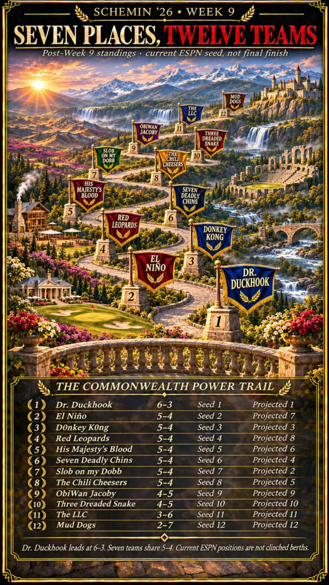
published_memo_precedent
49 source words · 21 seconds at 145 wpm. Dialogue/ADR not locked.
Sequential shot cards · editorial coverage
W10F-P27-S0125:11–25:19 · 8s
OPENING / LAYOUT SCHEMATIC
Camera: Deep record-hall view with the twelve entries integrated into an existing long record surface and surrounding shadow; architecture remains spatially present.
Blocking: Orient the audience in the already described location: Receding hall, high windows and warm record lamps.
Dramatic purpose: Establish correct time, weather, light and landmark; no new event.
Movement: Stable orienting push or completely fixed geography master
End state: Retain through-nine official records now; after finality replace all rows and copy together. Never sort the future table by points alone.
Stage: STAGED BOARD ONLY. Independently verify faces, geography, sound, rights and release before filming.
W10-P28 · SCENE 29
THREE DIVISIONS. DIFFERENT PRESSURES.
Commonwealth intelligence / editorial · 4 shots
00:25:48 → 00:26:20
32 seconds
Source narration and scene premise
Six teams now share 6–4 records. Pizza contains three of them; Wings two; Burgers one. The same record creates different pressure in each division. Week 11 is the final crossover before Weeks 12–14 bring division opponents back together.
Do not alter: Division labels treated as geographic borders · Unverified tiebreak explanation · Clinched or eliminated language
End state: No official new seed, division-title award or territorial border is inferred from equal records.
Stage: STAGED BOARD ONLY. Independently verify faces, geography, sound, rights and release before filming.
W10-P29 · SCENE 30
THE TWELVE — SCORING FORM
Commonwealth intelligence / editorial · 4 shots
00:26:20 → 00:26:59
39 seconds
Source narration and scene premise
Slob on my Dobb leads the final scoring-form index, followed by His Majesty’s Blood and The LLC. The established formula weights season points per game through ten games at 70% and Week 10 at 30%. It measures points already produced. Week 11 injuries and byes belong beside the outlook, not hidden inside a changed formula.
Scene exit: The ranking yields to routes that remain possible, not to a forecast.
Reference images / not story frames
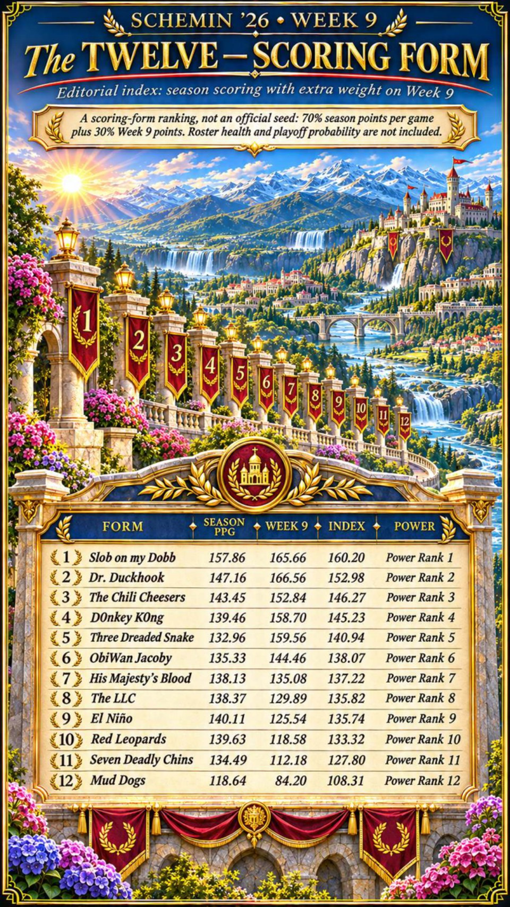
published_memo_precedent
55 source words · 23 seconds at 145 wpm. Dialogue/ADR not locked.
Sequential shot cards · editorial coverage
W10F-P29-S0126:20–26:28 · 8s
OPENING / LAYOUT SCHEMATIC
Camera: Landscape-dominant view from a worn lakeside approach, bridge receding diagonally; twelve compact ranked names sit in coherent open sky/reflected shadow, not report boxes.
Blocking: Orient the audience in the already described location: Layered upper-valley cloud; enough clear atmosphere for the complete ranking.
Dramatic purpose: Establish correct time, weather, light and landmark; no new event.
Movement: Stable orienting push or completely fixed geography master
End state: Retain the disclosed method. No rank is presented as an official seed or a probability; re-run after Monday closes.
Stage: STAGED BOARD ONLY. Independently verify faces, geography, sound, rights and release before filming.
W10-P30 · SCENE 31
FOUR MORE AFTER THIS
Commonwealth intelligence / editorial · 4 shots
00:26:59 → 00:27:36
37 seconds
Source narration and scene premise
All twelve teams still have a route, and none has clinched. Four games remain: one crossover, then three divisional rounds. Nine wins guarantees a berth; eight alone does not. A 6–8 finish can give Mud Dogs either a Burgers title or a shared place. Record scenarios assume no tied games.
Do not alter: Unsupported present-tense clinch/elimination claims, or future elimination claims without their stated Week 10 condition · Invented playoff probabilities · Permanent abandonment or property transfer
End state: Publish the conditional premise with the survival claim. Saved constructive witnesses establish possibility, never odds or likelihood.
Stage: STAGED BOARD ONLY. Independently verify faces, geography, sound, rights and release before filming.
W10-P31 · SCENE 32
THE NEXT SIX
Commonwealth intelligence / editorial · 5 shots
00:27:36 → 00:28:13
37 seconds
Source narration and scene premise
Four 6–4 contenders meet in two top-seed contests. The two 4–6 hosts need to close ground on the 5–5 visitors; The LLC needs recovery against Dr. Duckhook. These are not automatic eliminators. Only Mud Dogs is eliminated by a Week 11 loss. Head-to-head can decide ties; three divisional rounds follow.
End state: Keep all six provider home/away fixtures. A dedicated featured-preview page does not replace this league-wide schedule.
Stage: STAGED BOARD ONLY. Independently verify faces, geography, sound, rights and release before filming.
W10-P35 · SCENE 33
THE CROSSING NARROWS
His Majesty's Blood × D0nkey K0ng · 7 shots
00:28:13 → 00:29:11
58 seconds
Source narration and scene premise
Two commanding Sundays lead toward the same crossing, with both teams now 6–4. In their verified 2025 Week 9 meeting, D0nkey K0ng’s franchise won 179.68–111.42. That memory gives this visit an edge. His Majesty’s Blood has already moved its bye-week starters; D0nkey K0ng’s current lineup still shows Bijan Robinson and Denzel Boston on byes. One more test comes before division games return.
Scene exit: Cut from poised rivalry to the quiet camp preparing for another visitor.
Reference images / not story frames
CHAR-AUSTIN-BYARS
CHAR-AUSTIN-BYARS
CHAR-WILSON-LOOK
published_memo_precedent
62 source words · 26 seconds at 145 wpm. Dialogue/ADR not locked.
Sequential shot cards · editorial coverage
W10F-P35-S0128:13–28:20 · 7s
OPENING / LAYOUT SCHEMATIC
Camera: Wide oblique along the old bridge deck; D0nkey K0ng near approach, His Majesty's Blood beyond the opposite pier, empty stone between them.
Blocking: Orient the audience in the already described location: His Majesty's Blood’s hooded arrival, lake beneath arches and advancing upper-valley cloud.
Dramatic purpose: Establish correct time, weather, light and landmark; no new event.
Movement: Stable orienting push or completely fixed geography master
Do not alter: New medical diagnosis from a fantasy slot flag · Guaranteed return or future starter without confirmation · Final Week10 record or clinch from live score · New permanent location or belt transfer
End state: GOTW recommendation remains a candidate. Provider home D0nkey K0ng differs from the neutral fictional preview site; no victory, title transfer or promised final lineup.
Stage: STAGED BOARD ONLY. Independently verify faces, geography, sound, rights and release before filming.
W10-P33 · SCENE 34
THE WEATHER IS COMING HOME
Slob on my Dobb · 4 shots
00:29:11 → 00:30:00
49 seconds
Source narration and scene premise
Slob on my Dobb’s delivery passed through the swamp without trouble. Next week the schedule brings El Niño to Slob on my Dobb. The league’s scoring leader has a different problem to prepare for, and both teams need a tight end before that meeting. After this comes the divisional finish. The next round begins with the work done between Sundays.
Scene exit: End on preparation and incoming weather; no forced cliffhanger explosion.
Reference images / not story frames
CHAR-JORDAN-HOLLINGSHEAD
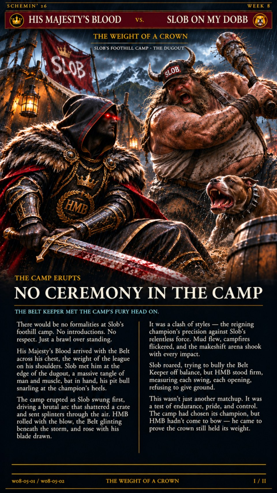
published_location_geometry
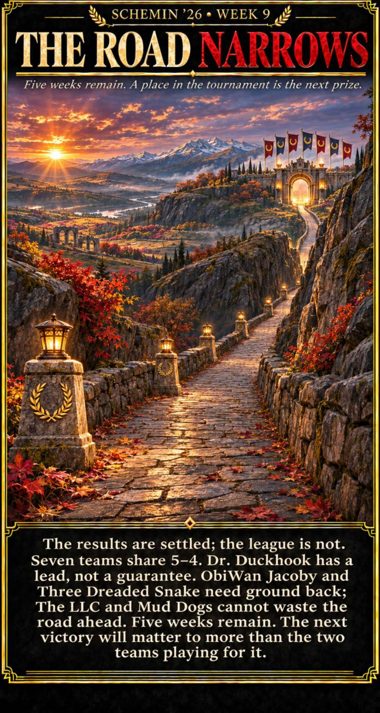
published_memo_precedent
60 source words · 25 seconds at 145 wpm. Dialogue/ADR not locked.
Sequential shot cards · editorial coverage
W10F-P33-S0129:11–29:22 · 11s
OPENING / LAYOUT SCHEMATIC
Camera: Wide view outward from the existing tailgate shelter toward the Hearthroad and dark foothill cloud.
Blocking: Orient the audience in the already described location: Upper-valley front above the route; no claim that it has already grown because of a future win.
Dramatic purpose: Establish correct time, weather, light and landmark; no new event.
Movement: Stable orienting push or completely fixed geography master